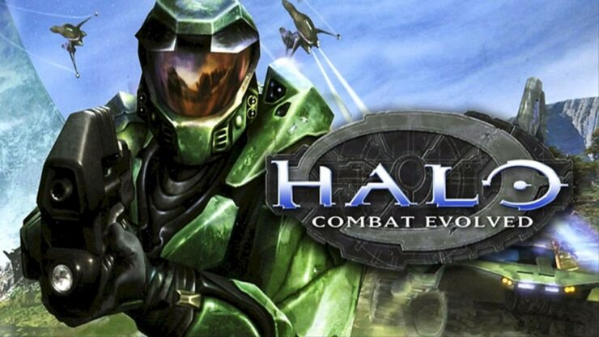
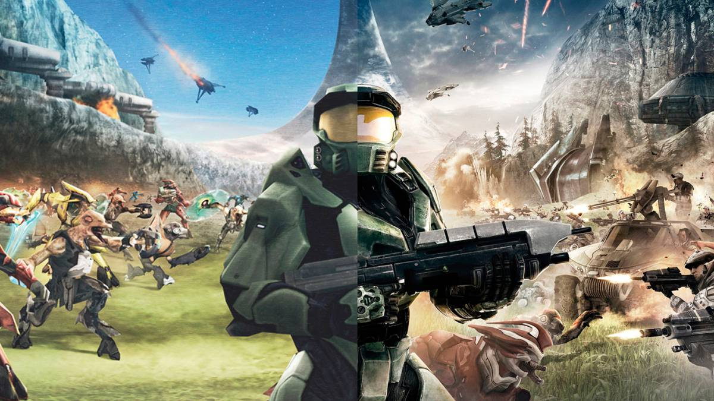

Halo es un shooter(Juego de disparos) en primera persona creado para la consola de microsoft conocida como Xbox en los años 2001 debitando con su primera entrega "Halo: Combat Evolved" y convirtiendose en las proximas generaciones de consolas como la cara de la marca Xbox.
En la epoca del milenio los juegos en 3D comenzaban a tener su identidad y popularidad en las consolas. Halo fue de esos juegos que comenzaron a tener relevancia entre la competencia. Sony ahora tenía un competidor, Microsoft había lanzado su primera consola y pudo ser muy popular gracias a las novedades que traía Halo como un juego de disparos donde podías conducir vehículos y tener una gran varidad de armas y enemigos, gráficos impresionantes para la época, la implamentación de una jugabilidad comoda para los controles(Gracias a Halo, hoy en día los juegos de disparos tienen los controles que conocemos), mécanicas impreionantes, etc; Halo no solo se quedó con eso , sino que también traía consigo una historia enganchante e interesante para la audiencia.
En la campaña de Halo nos ambientamos en un futuro lejano donde la humanidad es capaz de viajar por el espacio, pero teniendo conflictos con una secta de especies alienigenas con creencias religiosas. En esta historia, el jugador maneja a un supersoldado con la misión de proteger a una inteligencia artificial y el transcuros aterrizando en un mundo con forma de anillo, un mundo creado por una especia mucho más antigua y avanzada que los humanos. En la aventura de la campaña tendremos que investigar el anillo y salvar aliados humanos, mientras más avanzamos iremos conociendo mucho más a estas especies alienigenas que nos atacan y también descubriendo las maravillas y horrores que esconde este mundo en forma de anillo.
